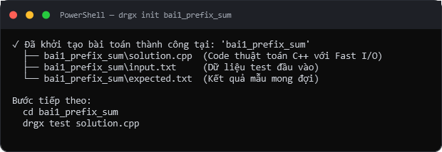
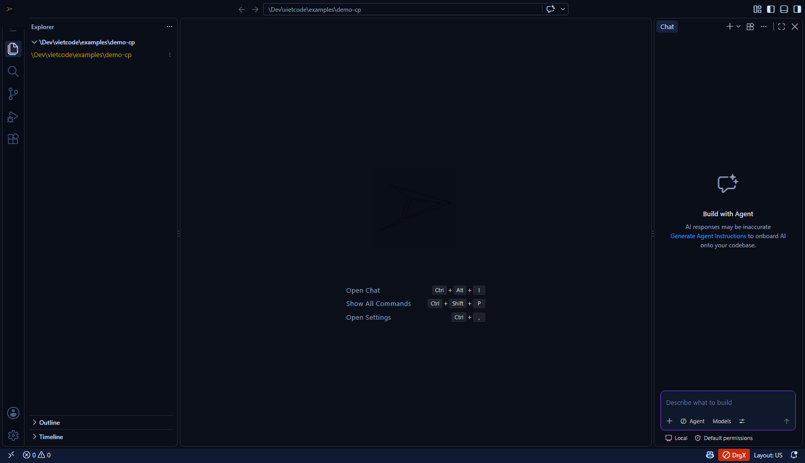

Mọi công cụ luyện thi & phát triển trong một IDE.
Tất cả tính năng dưới đây đều đã chạy thật và được chụp trực tiếp trên máy thử nghiệm: từ Judge đa testcase cục bộ, Stress Tester, Exam Server chống gian lận cho tới AI Copilot BYOK, 5 Skin Chuyên nghiệp và Web Lab.
Tiền kiểm 0,19 ms & chấm 10 testcase trong 1,46 giây.
Không xếp hàng trên judge online. Bấm Ctrl+Alt+J hoặc F9 — hệ thống chạy Pre-flight Check 5 luật quy chế tệp Themis trong 0,19 ms rồi tự động đọc toàn bộ
tests/*.in đối chiếu với *.out / *.a / *.ans, trả về
AC / WA / RE / TLE kèm thời gian từng test (p50 = 1,46 s / 10 test) và diff đầu ra ngay trong IDE.
Judge cục bộ + Tiền kiểm 5 luật quy chế tệp Themis
freopen, lệch tên tệp .INP/.OUT (ERR_WRONG_FILENAME), đường dẫn tuyệt đối cứng C:\..., thư viện cấm <conio.h> và lệnh cout in thừa câu dẫn (đạt 100/100 bài kiểm thử đơn vị & bắt sống 10/10 tệp C++17 lịch sử quên sửa TASK.INP).g++ -O2 -std=c++17 (0,69 s) + chạy 10 test (0,76 s, ~0,18 s/luồng); phiên ấm đạt 0,78 s.Exam Integrity 6 lớp bảo vệ chuyên sâu
DrgX CP Studio được thiết kế theo mô hình Zero-Trust Client với 6 lớp bảo vệ kỹ thuật đồng bộ từ trình soạn thảo tới máy chủ chấm thi, đã kiểm chứng bằng 15/15 Smoke PASS và 14/14 SEC PASS:
Low Integrity + Win32 Job Object (trần RAM 256 MB/tiến trình) + nhãn MIC NO_READ_UP/NO_WRITE_UP + sys.addaudithook.studentToken — cấp token 16 ký tự đối chiếu bằng hmac.compare_digest, chặn nộp hộ khác máy (HTTP 403) và phòng không tồn tại (HTTP 404).SEC-09 đồng bộ trong 53,1 ms) + quét vân tay Winnowing 780 cặp / 37,82 ms.AI Copilot & Agent trong Dev Studio
Hỗ trợ BYOK (Bring Your Own Key) — chỉ kết nối ra ngoài khi bạn chủ động kích hoạt lệnh AI.

Editor tiếng Việt + 5 Skin Chuyên nghiệp


Một máy chủ — cả phòng máy cùng code trên trình duyệt.
Dành riêng cho phòng máy trường học khóa quyền cài phần mềm: máy chủ tự khởi chạy chế độ Web Lab, máy học sinh chỉ cần mở trình duyệt Edge/Chrome là làm bài được ngay.
DrgX Web Workbench Engine
8123–8127 nếu cổng bận (DRGX_WEB_PORT).
Chấm bài tập trung — kết quả không thuộc về client.
Trong kỳ thi thật, DrgX CP Studio nộp mã nguồn lên Exam Server (cổng 8765). Server xử lý đa luồng bằng ThreadingHTTPServer, tự biên dịch bằng g++ hoặc chạy python, đối chiếu từng testcase và trả về verdict AC / WA / CE / TLE / NO_TESTS.

| Endpoint | Payload gửi lên | Chức năng & Cơ chế bảo vệ |
|---|---|---|
| GET / | — | Health check của Exam Server (trả về trạng thái hoạt động + phiên bản v1.1.0 đa luồng) |
| POST /exam/create | {title} | Sinh mã phòng thi 6 ký tự ngẫu nhiên — hỗ trợ khóa quản trị DRGX_EXAM_ADMIN_KEY |
| POST /exam/join | {code, name} | Thí sinh điểm danh vào phòng; server lưu danh sách phiên làm bài có khóa STATE_LOCK |
| POST /submit | {examCode, language, code} | Biên dịch (g++ / python), giới hạn gói tin 512 KB (HTTP 413), chạy toàn bộ tests/<code>/*.in |
Các mã kết quả (Verdict) do Exam Server trả về:
Từ “biết viết code” đến “biết học gì tiếp”.
Tích hợp sẵn trang Hệ sinh thái học tập tĩnh (mở ngay bằng Ctrl+Alt+L) cùng Void-bit OJ 47 bài — giúp học sinh tự rèn luyện và lập câu lạc bộ tin học tại trường.
Trải nghiệm toàn bộ tính năng ngay trên máy bạn.
Không cần cấu hình phức tạp — chọn đúng bản Studio hoặc Void-bit OJ phù hợp với nhu cầu của bạn.